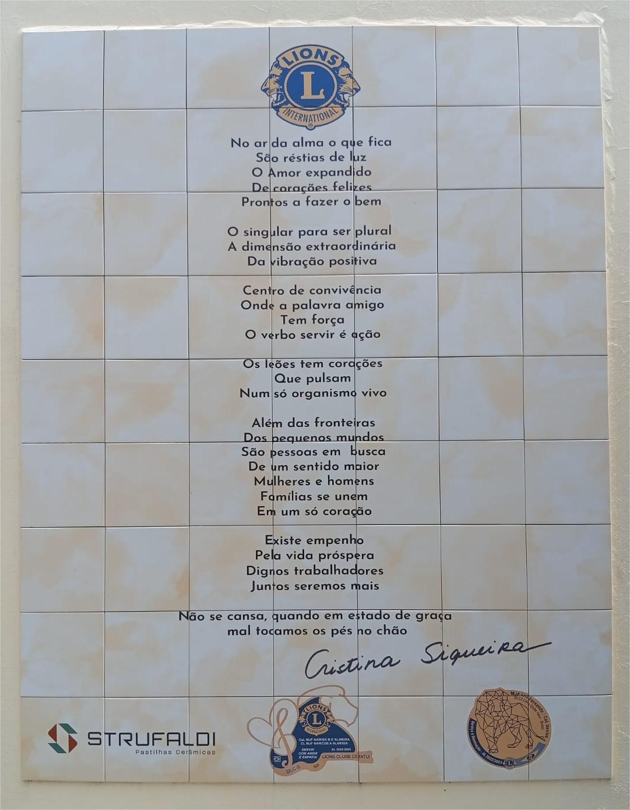

Fundado em 7 de setembro de 1955, o Lions Clube de Tatuí surgiu como uma resposta às necessidades da comunidade local, trazendo para nossa cidade os ideais de serviço voluntário e compromisso comunitário do Lions Clubs International.
Desde então, temos trabalhado incansavelmente para melhorar a qualidade de vida dos tatuianos através de projetos nas áreas de saúde, educação, assistência social e proteção ao meio ambiente.
"Ser Leão é mais do que pertencer a um clube; é abraçar um estilo de vida baseado no serviço, na compaixão e no desejo genuíno de fazer a diferença na vida das pessoas."